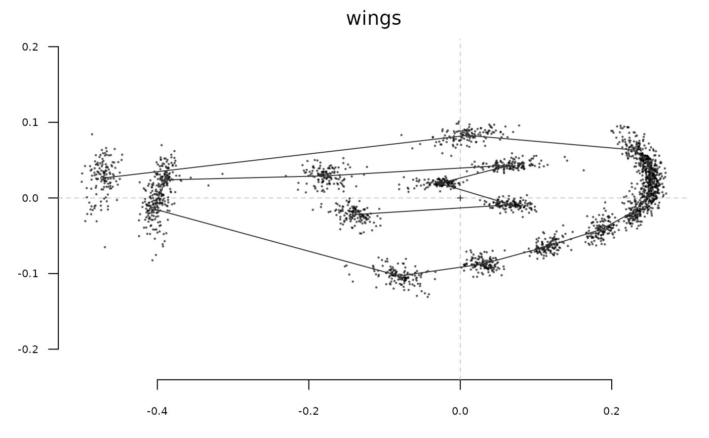

Quite a versatile function that calculates mean (or median, or whatever function)
on list or an array of shapes, an Ldk object. It can also be used on Coe objects.
In that case, the reverse transformation (from coefficients to shapes) is calculated, (within
groups defined with the fac argument if provided) and the Coe object is also returned
(in $Coe) along with a list of shapes (in $shp) and can then be passed to plot_MSHAPES.
Arguments
- x
a list, array, Ldk, LdkCoe, OutCoe or OpnCoe or PCA object
- fac
factor specification for fac_dispatcher
- FUN
a function to compute the mean shape (mean by default, by median can be considered)
- nb.pts
numeric the number of points for calculated shapes (only Coe objects)
- ...
useless here.
Value
the averaged shape; on Coe objects, a list with two components: $Coe object of the same class, and
$shp a list of matrices of (x, y) coordinates. On PCA and LDA objects, the FUN (typically mean or median)
of scores on PCs or LDs. This method used on the latter objects may be moved to another function at some point.
Examples
#### on shapes
MSHAPES(wings)
#> x y
#> 1 -0.472151969 0.026257480
#> 2 0.009588976 0.082756693
#> 3 0.231342520 0.063322047
#> 4 0.249218898 0.044129134
#> 5 0.254361417 0.022457480
#> 6 0.249206299 0.003249606
#> 7 0.230685827 -0.017059843
#> 8 0.186659843 -0.041403937
#> 9 0.116231496 -0.063584252
#> 10 0.030126772 -0.087316535
#> 11 -0.080339370 -0.103129134
#> 12 -0.405025984 -0.014459055
#> 13 -0.388690551 0.023895276
#> 14 -0.177349606 0.029181102
#> 15 0.066421260 0.043376378
#> 16 -0.027141732 0.019349606
#> 17 0.067113386 -0.009022047
#> 18 -0.140259843 -0.022011024
MSHAPES(wings$coo)
#> x y
#> 1 -0.472151969 0.026257480
#> 2 0.009588976 0.082756693
#> 3 0.231342520 0.063322047
#> 4 0.249218898 0.044129134
#> 5 0.254361417 0.022457480
#> 6 0.249206299 0.003249606
#> 7 0.230685827 -0.017059843
#> 8 0.186659843 -0.041403937
#> 9 0.116231496 -0.063584252
#> 10 0.030126772 -0.087316535
#> 11 -0.080339370 -0.103129134
#> 12 -0.405025984 -0.014459055
#> 13 -0.388690551 0.023895276
#> 14 -0.177349606 0.029181102
#> 15 0.066421260 0.043376378
#> 16 -0.027141732 0.019349606
#> 17 0.067113386 -0.009022047
#> 18 -0.140259843 -0.022011024
MSHAPES(coo_sample(bot, 24)$coo)
#> x y
#> 1 60.725 419.125
#> 2 58.350 344.200
#> 3 59.025 266.000
#> 4 59.925 189.900
#> 5 60.100 112.650
#> 6 72.025 40.300
#> 7 146.625 21.375
#> 8 222.175 24.600
#> 9 278.800 63.475
#> 10 286.850 136.775
#> 11 287.250 211.100
#> 12 287.925 288.400
#> 13 287.700 365.725
#> 14 283.325 441.375
#> 15 262.675 517.250
#> 16 237.325 586.950
#> 17 222.700 664.275
#> 18 215.900 739.350
#> 19 208.550 809.525
#> 20 137.150 808.650
#> 21 128.475 739.425
#> 22 123.650 663.775
#> 23 109.650 590.000
#> 24 83.625 514.500
stack(wings)
coo_draw(MSHAPES(wings))

bot.f <- efourier(bot, 12)
#> 'norm=TRUE' is used and this may be troublesome. See ?efourier #Details
MSHAPES(bot.f) # the mean (global) shape
#> no 'fac' provided, returns meanshape
#> x y
#> [1,] 1.168906286 -0.0001651753
#> [2,] 1.163078247 0.0421600553
#> [3,] 1.145987931 0.0791545836
#> [4,] 1.119080936 0.1068491537
#> [5,] 1.084462899 0.1234921899
#> [6,] 1.044515489 0.1298160330
#> [7,] 1.001501085 0.1286134238
#> [8,] 0.957247869 0.1237878526
#> [9,] 0.912978161 0.1191956670
#> [10,] 0.869298497 0.1176432074
#> [11,] 0.826324964 0.1203279475
#> [12,] 0.783884894 0.1268487171
#> [13,] 0.741725082 0.1357159282
#> [14,] 0.699667837 0.1451353059
#> [15,] 0.657683275 0.1537690869
#> [16,] 0.615878472 0.1612150898
#> [17,] 0.574430083 0.1680667629
#> [18,] 0.533499333 0.1755775102
#> [19,] 0.493164879 0.1850912925
#> [20,] 0.453393981 0.1974710400
#> [21,] 0.414053341 0.2127369864
#> [22,] 0.374945749 0.2300322600
#> [23,] 0.335852608 0.2479030949
#> [24,] 0.296566207 0.2647662777
#> [25,] 0.256905612 0.2793783445
#> [26,] 0.216720688 0.2911371254
#> [27,] 0.175894459 0.3001249134
#> [28,] 0.134352476 0.3069092041
#> [29,] 0.092080418 0.3122084326
#> [30,] 0.049142076 0.3165718347
#> [31,] 0.005684547 0.3202014303
#> [32,] -0.038080617 0.3229727379
#> [33,] -0.081922450 0.3246211931
#> [34,] -0.125651137 0.3249912594
#> [35,] -0.169173183 0.3242231538
#> [36,] -0.212517809 0.3227854829
#> [37,] -0.255819333 0.3213351308
#> [38,] -0.299256747 0.3204663421
#> [39,] -0.342970452 0.3204641335
#> [40,] -0.386988991 0.3211796377
#> [41,] -0.431199127 0.3220947589
#> [42,] -0.475378578 0.3225609447
#> [43,] -0.519286078 0.3221164568
#> [44,] -0.562776943 0.3207428677
#> [45,] -0.605894989 0.3189350982
#> [46,] -0.648891824 0.3175276310
#> [47,] -0.692145046 0.3173174414
#> [48,] -0.735982396 0.3186132956
#> [49,] -0.780457859 0.3208847676
#> [50,] -0.825153563 0.3226624581
#> [51,] -0.869086061 0.3217583294
#> [52,] -0.910772394 0.3157606556
#> [53,] -0.948465170 0.3026542245
#> [54,] -0.980510370 0.2813630409
#> [55,] -1.005735148 0.2520318883
#> [56,] -1.023752227 0.2159499153
#> [57,] -1.035081884 0.1751434820
#> [58,] -1.041039987 0.1317817301
#> [59,] -1.043407694 0.0876037220
#> [60,] -1.043964872 0.0435658071
#> [61,] -1.044013564 -0.0001747867
#> [62,] -1.044025203 -0.0439492146
#> [63,] -1.043512254 -0.0880697136
#> [64,] -1.041161156 -0.1323293477
#> [65,] -1.035188270 -0.1757099138
#> [66,] -1.023817167 -0.2164219884
#> [67,] -1.005743392 -0.2522778444
#> [68,] -0.980460978 -0.2812740940
#> [69,] -0.948369940 -0.3021819671
#> [70,] -0.910650551 -0.3149377945
#> [71,] -0.868957121 -0.3206959085
#> [72,] -0.825030797 -0.3215245758
#> [73,] -0.780344469 -0.3198490360
#> [74,] -0.735871551 -0.3178294420
#> [75,] -0.692023558 -0.3168762464
#> [76,] -0.648746041 -0.3174481558
#> [77,] -0.605716737 -0.3191716238
#> [78,] -0.562567403 -0.3212066058
#> [79,] -0.519056221 -0.3227031290
#> [80,] -0.475145999 -0.3231749465
#> [81,] -0.430982360 -0.3226635945
#> [82,] -0.386801287 -0.3216571441
#> [83,] -0.342815151 -0.3208256181
#> [84,] -0.299125898 -0.3207013096
#> [85,] -0.255696084 -0.3214429085
#> [86,] -0.212381865 -0.3227761919
#> [87,] -0.169007586 -0.3241225855
#> [88,] -0.125448199 -0.3248451835
#> [89,] -0.081686941 -0.3244939182
#> [90,] -0.037829212 -0.3229368063
#> [91,] 0.005927348 -0.3203193572
#> [92,] 0.049350196 -0.3168750705
#> [93,] 0.092232630 -0.3126812931
#> [94,] 0.134436974 -0.3074850475
#> [95,] 0.175910258 -0.3006982100
#> [96,] 0.216675572 -0.2915894535
#> [97,] 0.256811552 -0.2796108642
#> [98,] 0.296433966 -0.2647280865
#> [99,] 0.335687496 -0.2476054872
#> [100,] 0.374746057 -0.2295433326
#> [101,] 0.413812022 -0.2121578168
#> [102,] 0.453102987 -0.1969013652
#> [103,] 0.492820622 -0.1845967071
#> [104,] 0.533107240 -0.1751700190
#> [105,] 0.574006481 -0.1677059544
#> [106,] 0.615448834 -0.1608297786
#> [107,] 0.657277055 -0.1532916765
#> [108,] 0.699311281 -0.1445361651
#> [109,] 0.741434152 -0.1350246853
#> [110,] 0.783660554 -0.1261538349
#> [111,] 0.826152488 -0.1197537224
#> [112,] 0.869151275 -0.1173116512
#> [113,] 0.912825186 -0.1191865197
#> [114,] 0.957062915 -0.1241110447
#> [115,] 1.001270984 -0.1292041692
#> [116,] 1.044245114 -0.1305548005
#> [117,] 1.084175273 -0.1242429094
#> [118,] 1.118812297 -0.1075023934
#> [119,] 1.145778947 -0.0796605231
#> [120,] 1.162963747 -0.0425396294
ms <- MSHAPES(bot.f, 'type')
ms$Coe
#> An OutCoe object [ elliptical Fourier analysis ]
#> --------------------
#> - $coe: 2 outlines described, 12 harmonics
#> # A tibble: 2 × 2
#> type fake
#> <fct> <fct>
#> 1 beer c
#> 2 whisky a
class(ms$Coe)
#> [1] "OutCoe" "Coe"
ms <- ms$shp
coo_plot(ms$beer)
coo_draw(ms$whisky, border='forestgreen')